Constantes de Tiempo RC y L/R
Electrical transients
Este capítulo explora la respuesta de condensadores e inductores a cambios repentinos en el voltaje de CC (llamadotransitoriovoltaje), cuando se conecta en serie con una resistencia. A diferencia de las resistencias, que responden instantáneamente al voltaje aplicado, los capacitores e inductores reaccionan con el tiempo a medida que absorben y liberan energía.
Capacitor transient response
Debido a que los condensadores almacenan energía en forma de campo eléctrico, tienden a actuar como pequeñas baterías de celda secundaria, pudiendo almacenar y liberar energía eléctrica. Un condensador completamente descargado mantiene cero voltios en sus terminales y un condensador cargado mantiene una cantidad constante de voltaje en sus terminales, como una batería. Cuando los condensadores se colocan en un circuito con otras fuentes de voltaje, absorberán energía de esas fuentes, del mismo modo que una batería de celda secundaria se cargará como resultado de estar conectada a un generador. Un condensador completamente descargado, que tiene un voltaje terminal de cero, inicialmente actuará como un cortocircuito cuando se conecte a una fuente de voltaje, consumiendo una corriente máxima a medida que comienza a generar una carga. Con el tiempo, el voltaje terminal del capacitor aumenta para igualar el voltaje aplicado desde la fuente y la corriente a través del capacitor disminuye en consecuencia. Una vez que el condensador haya alcanzado el voltaje total de la fuente, dejará de extraer corriente de ella y se comportará esencialmente como un circuito abierto.
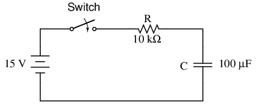
Cuando se cierra el interruptor por primera vez, el voltaje a través del capacitor (que nos dijeron que estaba completamente descargado) es cero voltios; por lo tanto, al principio se comporta como si fuera un cortocircuito. Con el tiempo, el voltaje del capacitor aumentará hasta igualar el voltaje de la batería, lo que terminará en una condición en la que el capacitor se comporta como un circuito abierto. La corriente a través del circuito está determinada por la diferencia de voltaje entre la batería y el capacitor, dividida por la resistencia de 10 kΩ. A medida que el voltaje del capacitor se acerca al voltaje de la batería, la corriente se acerca a cero. Una vez que el voltaje del capacitor haya alcanzado los 15 voltios, la corriente será exactamente cero. Veamos cómo funciona esto usando valores reales:
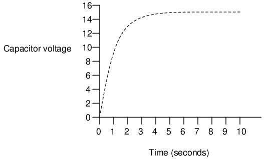
--------------------------------------------- | Time | Battery | Capacitor | Current | |(seconds) | voltage | voltage | | |-------------------------------------------| | 0 | 15 V | 0 V | 1500 uA | |-------------------------------------------| | 0.5 | 15 V | 5.902 V | 909.8 uA | |-------------------------------------------| | 1 | 15 V | 9.482 V | 551.8 uA | |-------------------------------------------| | 2 | 15 V | 12.970 V | 203.0 uA | |-------------------------------------------| | 3 | 15 V | 14.253 V | 74.68 uA | |-------------------------------------------| | 4 | 15 V | 14.725 V | 27.47 uA | |-------------------------------------------| | 5 | 15 V | 14.899 V | 10.11 uA | |-------------------------------------------| | 6 | 15 V | 14.963 V | 3.718 uA | |-------------------------------------------| | 10 | 15 V | 14.999 V | 0.068 uA | ---------------------------------------------
El acercamiento del voltaje del capacitor a 15 voltios y el acercamiento de la corriente a cero con el tiempo es lo que un matemático llamaríaasintótico:es decir, ambos se acercan a sus valores finales, acercándose cada vez más con el tiempo, pero nunca llegan exactamente a sus destinos. Sin embargo, a todos los efectos prácticos, podemos decir que el voltaje del capacitor eventualmente alcanzará los 15 voltios y que la corriente eventualmente será igual a cero.
Usando el programa de análisis de circuitos SPICE, podemos trazar esta acumulación asintótica de voltaje del capacitor y caída de corriente del capacitor en una forma más gráfica (la corriente del capacitor se representa en términos de caída de voltaje a través de la resistencia, usando la resistencia como derivación para medir la corriente):
capacitor charging v1 1 0 dc 15 r1 1 2 10k c1 2 0 100u ic=0 .tran .5 10 uic .plot tran v(2,0) v(1,2) .end
legend: *: v(2) Capacitor voltage +: v(1,2) Capacitor current time v(2) (*+)----------- 0.000E+00 5.000E+00 1.000E+01 1.500E+01 - - - - - - - - - - - - - - - - - - - - - - - - - - - - - - - - - 0.000E+00 5.976E-05 * . . + 5.000E-01 5.881E+00 . . * + . . 1.000E+00 9.474E+00 . .+ *. . 1.500E+00 1.166E+01 . + . . * . 2.000E+00 1.297E+01 . + . . * . 2.500E+00 1.377E+01 . + . . * . 3.000E+00 1.426E+01 . + . . * . 3.500E+00 1.455E+01 .+ . . *. 4.000E+00 1.473E+01 .+ . . *. 4.500E+00 1.484E+01 + . . * 5.000E+00 1.490E+01 + . . * 5.500E+00 1.494E+01 + . . * 6.000E+00 1.496E+01 + . . * 6.500E+00 1.498E+01 + . . * 7.000E+00 1.499E+01 + . . * 7.500E+00 1.499E+01 + . . * 8.000E+00 1.500E+01 + . . * 8.500E+00 1.500E+01 + . . * 9.000E+00 1.500E+01 + . . * 9.500E+00 1.500E+01 + . . * 1.000E+01 1.500E+01 + . . * - - - - - - - - - - - - - - - - - - - - - - - - - - - - - - - - -
Como puedes ver, he usado el.tramacomando en la lista de red en lugar del más familiar.imprimirdominio. Esto genera un trazado pseudográfico de figuras en la pantalla del ordenador utilizando caracteres de texto. SPICE traza gráficos de tal manera que el tiempo está en el eje vertical (hacia abajo) y la amplitud (voltaje/corriente) se traza en el eje horizontal (derecha = más; izquierda = menos). Observe cómo el voltaje aumenta (a la derecha del gráfico) muy rápidamente al principio y luego disminuye gradualmente a medida que pasa el tiempo. La corriente también cambia muy rápidamente al principio y luego se nivela a medida que pasa el tiempo, pero se acerca al mínimo (a la izquierda de la escala) mientras que el voltaje se acerca al máximo.
- REVISAR:
- Los condensadores actúan de manera similar a las baterías de celda secundaria cuando se enfrentan a un cambio repentino en el voltaje aplicado: inicialmente reaccionan produciendo una corriente alta que disminuye con el tiempo.
- Un condensador completamente descargado actúa inicialmente como un cortocircuito (corriente sin caída de voltaje) ante la aplicación repentina de voltaje. Después de cargar completamente a ese nivel de voltaje, actúa como un circuito abierto (caída de voltaje sin corriente).
- En un circuito de carga de resistencia-condensador, el voltaje del capacitor va de nada al voltaje total de la fuente, mientras que la corriente va del máximo a cero; ambas variables cambian más rápidamente al principio, acercándose a sus valores finales cada vez más lentamente a medida que pasa el tiempo.
Inductor transient response
Los inductores tienen exactamente las características opuestas de los condensadores. Mientras que los condensadores almacenan energía en uneléctricocampo (producido por el voltaje entre dos placas), los inductores almacenan energía en unmagnéticocampo (producido por la corriente a través del cable). Así, mientras la energía almacenada en un condensador intenta mantener un voltaje constante en sus terminales, la energía almacenada en un inductor intenta mantener una corriente constante a través de sus devanados. Debido a esto, los inductores se oponen a los cambios de corriente y actúan precisamente de manera opuesta a los condensadores, que se oponen a los cambios de voltaje. Un inductor completamente descargado (sin campo magnético), que tiene corriente cero a través de él, inicialmente actuará como un circuito abierto cuando se conecte a una fuente de voltaje (mientras intenta mantener corriente cero), reduciendo el voltaje máximo a través de sus cables. Con el tiempo, la corriente del inductor aumenta hasta el valor máximo permitido por el circuito y el voltaje del terminal disminuye en consecuencia. Una vez que el voltaje terminal del inductor ha disminuido al mínimo (cero para un inductor "perfecto"), la corriente permanecerá en un nivel máximo y se comportará esencialmente como un cortocircuito.
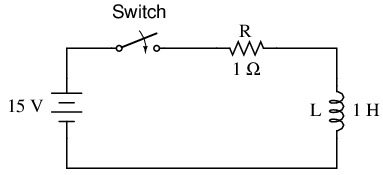
Cuando el interruptor se cierra por primera vez, el voltaje a través del inductor saltará inmediatamente al voltaje de la batería (actuando como si fuera un circuito abierto) y decaerá hasta cero con el tiempo (actuando eventualmente como si fuera un cortocircuito). El voltaje a través del inductor se determina calculando cuánto voltaje cae a través de R, dada la corriente a través del inductor, y restando ese valor de voltaje de la batería para ver qué queda. Cuando el interruptor se cierra por primera vez, la corriente es cero, luego aumenta con el tiempo hasta que es igual al voltaje de la batería dividido por la resistencia en serie de 1 Ω. Este comportamiento es precisamente opuesto al del circuito de resistencia-condensador en serie, donde la corriente comienza en un máximo y el voltaje del capacitor en cero. Veamos cómo funciona esto usando valores reales:
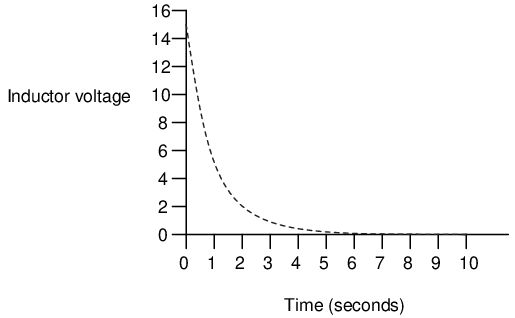
--------------------------------------------- | Time | Battery | Inductor | Current | |(seconds) | voltage | voltage | | |-------------------------------------------| | 0 | 15 V | 15 V | 0 | |-------------------------------------------| | 0.5 | 15 V | 9.098 V | 5.902 A | |-------------------------------------------| | 1 | 15 V | 5.518 V | 9.482 A | |-------------------------------------------| | 2 | 15 V | 2.030 V | 12.97 A | |-------------------------------------------| | 3 | 15 V | 0.747 V | 14.25 A | |-------------------------------------------| | 4 | 15 V | 0.275 V | 14.73 A | |-------------------------------------------| | 5 | 15 V | 0.101 V | 14.90 A | |-------------------------------------------| | 6 | 15 V | 37.181 mV | 14.96 A | |-------------------------------------------| | 10 | 15 V | 0.681 mV | 14.99 A | ---------------------------------------------
Al igual que con el circuito RC, el acercamiento del voltaje del inductor a 0 voltios y el acercamiento de la corriente a 15 amperios con el tiempo esasintótico. Sin embargo, a todos los efectos prácticos, podemos decir que el voltaje del inductor eventualmente alcanzará 0 voltios y que la corriente eventualmente igualará el máximo de 15 amperios.
Nuevamente, podemos usar el programa de análisis de circuitos SPICE para trazar esta caída asintótica del voltaje del inductor y la acumulación de corriente del inductor en una forma más gráfica (la corriente del inductor se representa en términos de caída de voltaje a través de la resistencia, usando la resistencia como derivación para medir la corriente):
inductor charging v1 1 0 dc 15 r1 1 2 1 l1 2 0 1 ic=0 .tran .5 10 uic .plot tran v(2,0) v(1,2) .end
legend: *: v(2) Inductor voltage +: v(1,2) Inductor current time v(2) (*+)------------ 0.000E+00 5.000E+00 1.000E+01 1.500E+01 - - - - - - - - - - - - - - - - - - - - - - - - - - - - - - - - - 0.000E+00 1.500E+01 + . . * 5.000E-01 9.119E+00 . . + * . . 1.000E+00 5.526E+00 . .* +. . 1.500E+00 3.343E+00 . * . . + . 2.000E+00 2.026E+00 . * . . + . 2.500E+00 1.226E+00 . * . . + . 3.000E+00 7.429E-01 . * . . + . 3.500E+00 4.495E-01 .* . . +. 4.000E+00 2.724E-01 .* . . +. 4.500E+00 1.648E-01 * . . + 5.000E+00 9.987E-02 * . . + 5.500E+00 6.042E-02 * . . + 6.000E+00 3.662E-02 * . . + 6.500E+00 2.215E-02 * . . + 7.000E+00 1.343E-02 * . . + 7.500E+00 8.123E-03 * . . + 8.000E+00 4.922E-03 * . . + 8.500E+00 2.978E-03 * . . + 9.000E+00 1.805E-03 * . . + 9.500E+00 1.092E-03 * . . + 1.000E+01 6.591E-04 * . . + - - - - - - - - - - - - - - - - - - - - - - - - - - - - - - - - -
Observe cómo el voltaje disminuye (a la izquierda del gráfico) muy rápidamente al principio y luego disminuye gradualmente a medida que pasa el tiempo. La corriente también cambia muy rápidamente al principio y luego se nivela a medida que pasa el tiempo, pero se acerca al máximo (derecha de la escala) mientras que el voltaje se acerca al mínimo.
- REVISAR:
- Un inductor completamente "descargado" (sin corriente a través de él) actúa inicialmente como un circuito abierto (caída de voltaje sin corriente) cuando se enfrenta a una aplicación repentina de voltaje. Después de "cargarse" completamente hasta el nivel final de corriente, actúa como un cortocircuito (corriente sin caída de voltaje).
- En un circuito de "carga" de resistencia-inductor, la corriente del inductor va de nada al valor total mientras que el voltaje va del máximo a cero; ambas variables cambian más rápidamente al principio, acercándose a sus valores finales cada vez más lentamente a medida que pasa el tiempo.
Cálculos de tensión y corriente
Existe una forma segura de calcular cualquiera de los valores en un circuito de CC reactivo a lo largo del tiempo. El primer paso es identificar los valores inicial y final para cualquier cantidad a la que el capacitor o inductor se oponga al cambio; es decir, cualquier cantidad que el componente reactivo intente mantener constante. Para condensadores, esta cantidad esVoltaje; para inductores, esta cantidad es lacorriente. Cuando el interruptor en un circuito se cierra (o se abre), el componente reactivo intentará mantener esa cantidad en el mismo nivel que estaba antes de la transición del interruptor, de modo que ese valor se utilizará para el valor "inicial". El valor final de esta cantidad es cualquiera que sea esa cantidad después de un tiempo infinito. Esto se puede determinar analizando un circuito capacitivo como si el capacitor fuera un circuito abierto, y un circuito inductivo como si el inductor fuera un cortocircuito, porque así es como se comportan estos componentes cuando alcanzan la "carga completa", después de una cantidad infinita de tiempo.
El siguiente paso es calcular elconstante de tiempodel circuito: la cantidad de tiempo que tardan los valores de voltaje o corriente en cambiar aproximadamente un 63 por ciento desde sus valores iniciales hasta sus valores finales en una situación transitoria. En un circuito RC en serie, la constante de tiempo es igual a la resistencia total en ohmios multiplicada por la capacitancia total en faradios. Para un circuito L/R en serie, es la inductancia total en henrys dividida por la resistencia total en ohmios. En cualquier caso, la constante de tiempo se expresa en unidades deartículos de segunda clasey simbolizado por la letra griega "tau" (τ):
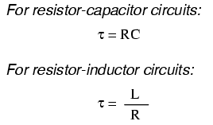
El aumento y la caída de los valores del circuito, como el voltaje y la corriente, en respuesta a un transitorio es, como se mencionó anteriormente, asintótico. Siendo así, los valores comienzan a cambiar rápidamente poco después del transitorio y se estabilizan con el tiempo. Si se representa en un gráfico, la aproximación a los valores finales de voltaje y corriente forma curvas exponenciales.
Como se indicó anteriormente, una constante de tiempo es la cantidad de tiempo que tarda cualquiera de estos valores en cambiar aproximadamente un 63 por ciento desde sus valores iniciales hasta sus valores finales (últimos). Por cada tiempo constante, estos valores se acercan (aproximadamente) un 63 por ciento a su objetivo final. La fórmula matemática para determinar el porcentaje preciso es bastante sencilla:
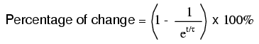
la cartaerepresenta la constante de Euler, que es aproximadamente 2,7182818. Se deriva de técnicas de cálculo, luego de analizar matemáticamente el enfoque asintótico de los valores del circuito. Después del tiempo de una constante de tiempo, el porcentaje de cambio desde el valor inicial hasta el valor final es:
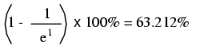
Después del tiempo de dos constantes de tiempo, el porcentaje de cambio desde el valor inicial hasta el valor final es:
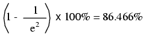
Después de diez constantes de tiempo, el porcentaje es:
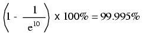
Cuanto más tiempo pasa desde la aplicación transitoria de voltaje de la batería, mayor es el valor del denominador en la fracción, lo que da como resultado un valor más pequeño para toda la fracción, lo que da como resultado un total general (1 menos la fracción) que se acerca a 1, o 100 por ciento.
Podemos hacer una fórmula más universal a partir de ésta para la determinación de valores de tensión y corriente en circuitos transitorios, multiplicando esta cantidad por la diferencia entre los valores final e inicial del circuito:
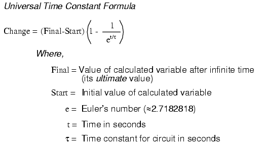
Analicemos el aumento de voltaje en el circuito resistor-condensador en serie que se muestra al principio del capítulo.
Tenga en cuenta que elegimos analizar el voltaje porque esa es la cantidad que los capacitores tienden a mantener constante. Aunque la fórmula funciona bastante bien para la corriente, los valores inicial y final de la corriente en realidad se derivan del voltaje del capacitor, por lo que calcular el voltaje es un método más directo. La resistencia es de 10 kΩ y la capacitancia es de 100 µF (microfaradios). Dado que la constante de tiempo (τ) de un circuito RC es el producto de la resistencia y la capacitancia, obtenemos un valor de 1 segundo:
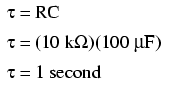
Si el capacitor arranca en un estado totalmente descargado (0 voltios), entonces podemos usar ese valor de voltaje como valor de "arranque". El valor final, por supuesto, será el voltaje de la batería (15 voltios). Nuestra fórmula universal para el voltaje del capacitor en este circuito se ve así:
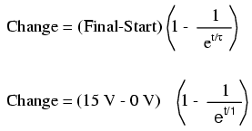
Así, tras 7,25 segundos de aplicar tensión a través del interruptor cerrado, la tensión de nuestro condensador habrá aumentado en:
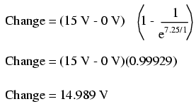
Como comenzamos con un voltaje de capacitor de 0 voltios, este aumento de 14,989 voltios significa que tenemos 14,989 voltios después de 7,25 segundos.
La misma fórmula también funcionará para determinar la corriente en ese circuito. Como sabemos que un condensador descargado inicialmente actúa como un cortocircuito, la corriente de arranque será la máxima cantidad posible: 15 voltios (de la batería) divididos por 10 kΩ (la única oposición a la corriente en el circuito al principio):
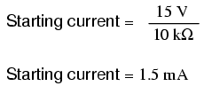
También sabemos que la corriente final será cero, ya que el condensador eventualmente se comportará como un circuito abierto, lo que significa que eventualmente no fluirán electrones en el circuito. Ahora que conocemos los valores de corriente inicial y final, podemos usar nuestra fórmula universal para determinar la corriente después de 7,25 segundos de cierre del interruptor en el mismo circuito RC:
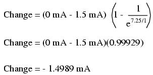
Tenga en cuenta que la cifra obtenida para el cambio es negativa, no positiva. Esto nos dice que la corriente tienedisminuidoen lugar de aumentar con el paso del tiempo. Como comenzamos con una corriente de 1,5 mA, esta disminución (-1,4989 mA) significa que tenemos 0,001065 mA (1,065 µA) después de 7,25 segundos.
También podríamos haber determinado la corriente del circuito en el tiempo = 7,25 segundos restando el voltaje del capacitor (14,989 voltios) del voltaje de la batería (15 voltios) para obtener la caída de voltaje a través de la resistencia de 10 kΩ, luego calculando la corriente a través de la resistencia (y todo el circuito en serie) con la Ley de Ohm (I=E/R). De cualquier manera, deberíamos obtener la misma respuesta:
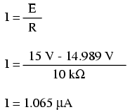
La fórmula de la constante de tiempo universal también funciona bien para analizar circuitos inductivos. Apliquemoslo a nuestro circuito L/R de ejemplo al comienzo del capítulo:
Con una inductancia de 1 henrio y una resistencia en serie de 1 Ω, nuestra constante de tiempo es igual a 1 segundo:
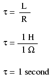
Como se trata de un circuito inductivo y sabemos que los inductores se oponen al cambio de corriente, estableceremos nuestra fórmula de constante de tiempo para los valores inicial y final de la corriente. Si comenzamos con el interruptor en la posición abierta, la corriente será igual a cero, por lo que cero es nuestro valor de corriente inicial. Después de dejar el interruptor cerrado durante un largo tiempo, la corriente se estabilizará hasta su valor final, igual al voltaje de la fuente dividido por la resistencia total del circuito (I=E/R), o 15 amperios en el caso de este circuito.
Si quisiéramos determinar el valor de la corriente a los 3,5 segundos, aplicaríamos la fórmula de la constante de tiempo universal como tal:
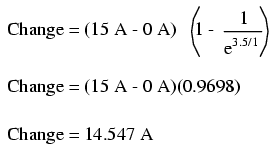
Dado que nuestra corriente inicial era cero, esto nos deja con una corriente de circuito de 14,547 amperios en 3,5 segundos.
La mejor manera de determinar el voltaje en un circuito inductivo es calcular primero la corriente del circuito y luego calcular las caídas de voltaje a través de las resistencias para encontrar lo que queda por caer a través del inductor. Con solo una resistencia en nuestro circuito de ejemplo (que tiene un valor de 1 Ω), esto es bastante fácil:
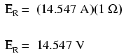
Restado del voltaje de nuestra batería de 15 voltios, esto deja 0,453 voltios a través del inductor en un tiempo = 3,5 segundos.
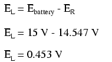
- REVISAR:
- Fórmula de constante de tiempo universal:
-
- Para analizar un circuito RC o L/R, siga estos pasos:
- (1): Determine la constante de tiempo para el circuito (RC o L/R).
- (2): Identifique la cantidad a calcular (cualquier cantidad cuyo cambio se oponga directamente al componente reactivo. Para los condensadores esto es voltaje; para los inductores esto es corriente).
- (3): Determine los valores inicial y final para esa cantidad.
- (4): Inserte todos estos valores (Final, Inicio, tiempo, constante de tiempo) en la fórmula de la constante de tiempo universal y resuelvacambiaren cantidad.
- (5): Si el valor inicial era cero, entonces el valor real en el momento especificado es igual al cambio calculado dado por la fórmula universal. De lo contrario, agregue el cambio al valor inicial para saber dónde se encuentra.
¿Por qué L/R y no LR?
A menudo resulta desconcertante para los nuevos estudiantes de electrónica por qué el cálculo de la constante de tiempo de un circuito inductivo es diferente del de un circuito capacitivo. Para un circuito de resistencia-condensador, la constante de tiempo (en segundos) se calcula a partir del producto (multiplicación) de la resistencia en ohmios y la capacitancia en faradios: τ=RC. Sin embargo, para un circuito resistor-inductor, la constante de tiempo se calcula a partir del cociente (división) de la inductancia en henrys sobre la resistencia en ohmios: τ=L/R.
Esta diferencia en el cálculo tiene un profundo impacto en lacualitativoAnálisis de la respuesta del circuito transitorio. Los circuitos de resistencia-condensador responden más rápido con baja resistencia y más lento con alta resistencia; Los circuitos de resistencia-inductor son todo lo contrario: responden más rápido con resistencia alta y más lento con resistencia baja. Mientras que los circuitos capacitivos no parecen presentar problemas intuitivos para el nuevo estudiante, los circuitos inductivos tienden a tener menos sentido.
La clave para comprender los circuitos transitorios es una comprensión firme del concepto de transferencia de energía y su naturaleza eléctrica. Tanto los condensadores como los inductores tienen la capacidad de almacenar cantidades de energía, el condensador almacena energía en medio de un campo eléctrico y el inductor almacena energía en medio de un campo magnético. El almacenamiento de energía electrostática de un condensador se manifiesta en la tendencia a mantener un voltaje constante en los terminales. El almacenamiento de energía electromagnética de un inductor se manifiesta en la tendencia a mantener una corriente constante a través de él.
Consideremos qué le sucede a cada uno de estos componentes reactivos en una condición dedescargar: es decir, cuando se libera energía del condensador o inductor para ser disipada en forma de calor mediante una resistencia:
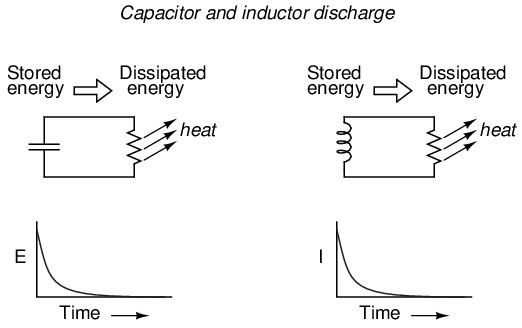
En cualquier caso, el calor disipado por la resistencia constituye energía.partidael circuito y, como consecuencia, el componente reactivo pierde su reserva de energía con el tiempo, lo que resulta en una disminución mensurable del voltaje (condensador) o de la corriente (inductor) expresada en el gráfico. Cuanta más potencia disipe la resistencia, más rápido se producirá esta acción de descarga, porque la potencia es, por definición, la tasa de transferencia de energía a lo largo del tiempo.
Por lo tanto, la constante de tiempo de un circuito transitorio dependerá de la resistencia del circuito. Por supuesto, también depende del tamaño (capacidad de almacenamiento) del componente reactivo, pero como la relación de la resistencia con la constante de tiempo es el tema de esta sección, nos centraremos únicamente en los efectos de la resistencia. La constante de tiempo de un circuito será menor (tasa de descarga más rápida) si el valor de resistencia es tal que maximiza la disipación de energía (tasa de transferencia de energía en calor). Para un circuito capacitivo donde la energía almacenada se manifiesta en forma de voltaje, esto significa que la resistencia debe tener un valor de resistencia bajo para maximizar la corriente para cualquier cantidad dada de voltaje (dado el voltaje multiplicado por la corriente alta es igual a la potencia alta). Para un circuito inductivo donde la energía almacenada se manifiesta en forma de corriente, esto significa que la resistencia debe tener un valor de resistencia alto para maximizar la caída de voltaje para cualquier cantidad dada de corriente (dada la corriente multiplicada por el alto voltaje es igual a alta potencia).
Esto puede entenderse de manera análoga considerando el almacenamiento de energía capacitivo e inductivo en términos mecánicos. Los condensadores, que almacenan energía electrostáticamente, son depósitos deenergía potencial. Inductores que almacenan energía electromagnéticamente (electrodinamicamente), son reservorios deenergía cinética. En términos mecánicos, la energía potencial se puede representar mediante una masa suspendida, mientras que la energía cinética se puede representar mediante una masa en movimiento. Considere la siguiente ilustración como una analogía de un condensador:
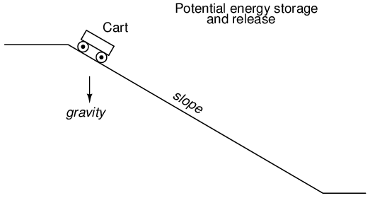
El carro, situado en la cima de una pendiente, posee energía potencial debido a la influencia de la gravedad y su posición elevada en la colina. Si consideramos que el sistema de frenado del carro es análogo a la resistencia del sistema y que el carro mismo es el capacitor, ¿qué valor de resistencia facilitaría la liberación rápida de esa energía potencial? ¡Una resistencia mínima (sin frenos) disminuiría la altitud del carro más rápidamente, por supuesto! Sin ninguna acción de frenado, el carro rodará libremente cuesta abajo, gastando así esa energía potencial a medida que pierde altura. Con una acción de frenado máxima (frenos firmemente puestos), el carro se negará a rodar (o rodará muy lentamente) y mantendrá su energía potencial durante un largo período de tiempo. Asimismo, un circuito capacitivo se descargará rápidamente si su resistencia es baja y se descargará lentamente si su resistencia es alta.
Ahora consideremos una analogía mecánica para un inductor, que muestra su energía almacenada en forma cinética:
Esta vez el carro está en un terreno nivelado y ya se está moviendo. Su energía es cinética (movimiento), no potencial (altura). Una vez más, si consideramos que el sistema de frenado del carro es análogo a la resistencia del circuito y que el carro mismo es el inductor, ¿qué valor de resistencia facilitaría la liberación rápida de esa energía cinética? ¡La máxima resistencia (máxima acción de frenado) lo ralentizaría más rápido, por supuesto! Con una acción de frenado máxima, el carro se detendrá rápidamente, gastando así su energía cinética a medida que desacelera. Sin ninguna acción de frenado, el carro podrá rodar indefinidamente (salvo otras fuentes de fricción como la resistencia aerodinámica y la resistencia a la rodadura) y mantendrá su energía cinética durante un largo período de tiempo. Asimismo, un circuito inductivo se descargará rápidamente si su resistencia es alta y se descargará lentamente si su resistencia es baja.
Esperemos que esta explicación arroje más luz sobre el tema de las constantes de tiempo y la resistencia, y por qué la relación entre ambas es opuesta para los circuitos capacitivos e inductivos.
Cálculos complejos de tensión y corriente
Hay circunstancias en las que es posible que necesite analizar un circuito reactivo de CC cuando los valores iniciales de voltaje y corriente no son respectivos a un estado completamente "descargado". En otras palabras, el capacitor podría comenzar en una condición de carga parcial en lugar de comenzar con cero voltios, y un inductor podría comenzar con una cierta cantidad de corriente ya a través de él, en lugar de cero como hemos estado suponiendo hasta ahora. Tome este circuito como ejemplo, comenzando con el interruptor abierto y terminando con el interruptor en la posición cerrada:
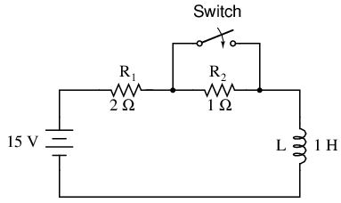
Dado que este es un circuito inductivo, comenzaremos nuestro análisis determinando los valores inicial y final para lacorriente. Este paso es de vital importancia al analizar circuitos inductivos, ya que el inicio y el finalVoltaje¡Solo se puede saber después de que se haya determinado la corriente! Con el interruptor abierto (condición inicial), hay una resistencia total (en serie) de 3 Ω, lo que limita la corriente final en el circuito a 5 amperios:
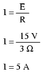
Entonces, incluso antes de que se cierre el interruptor, tenemos una corriente a través del inductor de 5 amperios, en lugar de comenzar desde 0 amperios como en el ejemplo anterior del inductor. Con el interruptor cerrado (la condición final), la resistencia de 1 Ω se cortocircuita (se deriva), lo que cambia la resistencia total del circuito a 2 Ω. Con el interruptor cerrado, el valor final de la corriente a través del inductor sería:
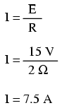
Entonces, el inductor de este circuito tiene una corriente inicial de 5 amperios y una corriente final de 7,5 amperios. Dado que el "timing" se llevará a cabo durante el tiempo que el interruptor esté cerrado y R2está en corto, necesitamos calcular nuestra constante de tiempo a partir de L1y r1: 1 Henry dividido por 2 Ω, o τ = 1/2 segundo. Con estos valores podemos calcular qué pasará con la corriente con el tiempo. El voltaje a través del inductor se calculará multiplicando la corriente por 2 (para llegar al voltaje a través de la resistencia de 2 Ω) y luego restándolo de 15 voltios para ver qué queda. Si se da cuenta de que el voltaje a través del inductor comienza en 5 voltios (cuando el interruptor se cierra por primera vez) y decae a 0 voltios con el tiempo, también puede usar estas cifras para los valores iniciales/finales en la fórmula general y obtener los mismos resultados:
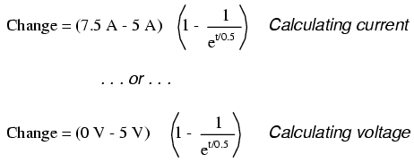
--------------------------------------------- | Time | Battery | Inductor | Current | |(seconds) | voltage | voltage | | |-------------------------------------------| | 0 | 15 V | 5 V | 5 A | |-------------------------------------------| | 0.1 | 15 V | 4.094 V | 5.453 A | |-------------------------------------------| | 0.25 | 15 V | 3.033 V | 5.984 A | |-------------------------------------------| | 0.5 | 15 V | 1.839 V | 6.580 A | |-------------------------------------------| | 1 | 15 V | 0.677 V | 7.162 A | |-------------------------------------------| | 2 | 15 V | 0.092 V | 7.454 A | |-------------------------------------------| | 3 | 15 V | 0.012 V | 7.494 A | ---------------------------------------------
Complex circuits
¿Qué hacemos si nos encontramos con un circuito más complejo que las configuraciones en serie simples que hemos visto hasta ahora? Tome este circuito como ejemplo:
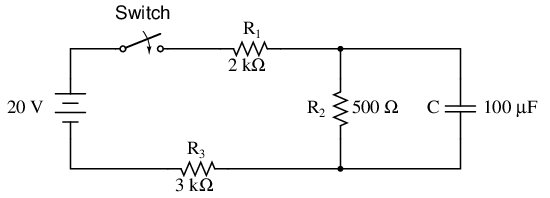
La fórmula simple de la constante de tiempo (τ=RC) se basa en una resistencia en serie simple conectada al capacitor. De hecho, la fórmula de la constante de tiempo para un circuito inductivo (τ=L/R) también se basa en el supuesto de una resistencia en serie simple. Entonces, ¿qué podemos hacer en una situación como esta, donde las resistencias están conectadas en serie-paralelo con el capacitor (o inductor)?
La respuesta proviene de nuestros estudios en análisis de redes. El teorema de Thevenin nos dice que podemos reduciranycircuito lineal a un equivalente de una fuente de voltaje, una resistencia en serie y un componente de carga a través de un par de sencillos pasos. Para aplicar el teorema de Thevenin a nuestro escenario aquí, consideraremos el componente reactivo (en el circuito de ejemplo anterior, el capacitor) como la carga y lo eliminaremos temporalmente del circuito para encontrar el voltaje y la resistencia de Thevenin. Luego, una vez que hayamos determinado los valores del circuito equivalente de Thevenin, volveremos a conectar el capacitor y resolveremos los valores de voltaje o corriente a lo largo del tiempo como lo hemos estado haciendo hasta ahora.
Después de identificar el capacitor como la "carga", lo retiramos del circuito y calculamos el voltaje en los terminales de carga (suponiendo, por supuesto, que el interruptor esté cerrado):
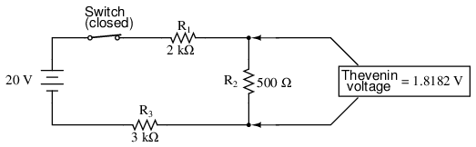
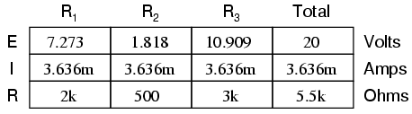
Este paso del análisis nos dice que el voltaje a través de los terminales de carga (igual que el de la resistencia R2) será de 1,8182 voltios sin carga conectada. Con un poco de reflexión, debería quedar claro que este será nuestro voltaje final a través del capacitor, ya que un capacitor completamente cargado actúa como un circuito abierto, consumiendo corriente cero. Usaremos este valor de voltaje para el voltaje de fuente de nuestro circuito equivalente de Thevenin.
Ahora, para resolver nuestra resistencia de Thevenin, necesitamos eliminar todas las fuentes de energía en el circuito original y calcular la resistencia vista desde los terminales de carga:
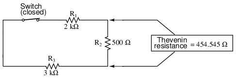
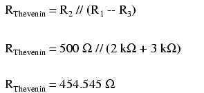
Volviendo a dibujar nuestro circuito como equivalente de Thevenin, obtenemos esto:
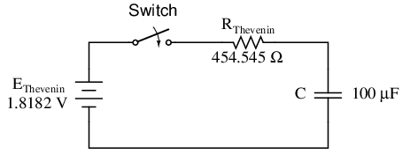
Nuestra constante de tiempo para este circuito será igual a la resistencia de Thevenin multiplicada por la capacitancia (τ=RC). Con los valores anteriores calculamos:
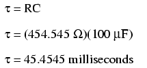
Ahora podemos resolver el voltaje a través del capacitor directamente con nuestra fórmula de constante de tiempo universal. Calculemos para un valor de 60 milisegundos. Como se trata de una fórmula capacitiva, configuraremos nuestros cálculos para el voltaje:
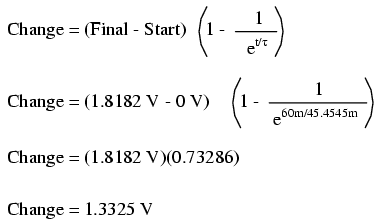
Nuevamente, debido a que se asumió que nuestro valor inicial para el voltaje del capacitor era cero, el voltaje real a través del capacitor a 60 milisegundos es igual a la cantidad de cambio de voltaje desde cero, o 1,3325 voltios.
Podríamos ir un paso más allá y demostrar la equivalencia del circuito Thevenin RC y el circuito original mediante análisis por ordenador. Usaré el programa de análisis SPICE para demostrar esto:
Comparison RC analysis * first, the netlist for the original circuit: v1 1 0 dc 20 r1 1 2 2k r2 2 3 500 r3 3 0 3k c1 2 3 100u ic=0 * then, the netlist for the thevenin equivalent: v2 4 0 dc 1.818182 r4 4 5 454.545 c2 5 0 100u ic=0 * now, we analyze for a transient, sampling every .005 seconds * over a time period of .37 seconds total, printing a list of * values for voltage across the capacitor in the original * circuit (between modes 2 y 3) y across the capacitor in * the thevenin equivalent circuit (between nodes 5 y 0) .tran .005 0.37 uic .print tran v(2,3) v(5,0) .end
time v(2,3) v(5)
0.000E+00 4.803E-06 4.803E-06
5.000E-03 1.890E-01 1.890E-01
1.000E-02 3.580E-01 3.580E-01
1.500E-02 5.082E-01 5.082E-01
2.000E-02 6.442E-01 6.442E-01
2.500E-02 7.689E-01 7.689E-01
3.000E-02 8.772E-01 8.772E-01
3.500E-02 9.747E-01 9.747E-01
4.000E-02 1.064E+00 1.064E+00
4.500E-02 1.142E+00 1.142E+00
5.000E-02 1.212E+00 1.212E+00
5.500E-02 1.276E+00 1.276E+00
6.000E-02 1.333E+00 1.333E+00
6.500E-02 1.383E+00 1.383E+00
7.000E-02 1.429E+00 1.429E+00
7.500E-02 1.470E+00 1.470E+00
8.000E-02 1.505E+00 1.505E+00
8.500E-02 1.538E+00 1.538E+00
9.000E-02 1.568E+00 1.568E+00
9.500E-02 1.594E+00 1.594E+00
1.000E-01 1.617E+00 1.617E+00
1.050E-01 1.638E+00 1.638E+00
1.100E-01 1.657E+00 1.657E+00
1.150E-01 1.674E+00 1.674E+00
1.200E-01 1.689E+00 1.689E+00
1.250E-01 1.702E+00 1.702E+00
1.300E-01 1.714E+00 1.714E+00
1.350E-01 1.725E+00 1.725E+00
1.400E-01 1.735E+00 1.735E+00
1.450E-01 1.744E+00 1.744E+00
1.500E-01 1.752E+00 1.752E+00
1.550E-01 1.758E+00 1.758E+00
1.600E-01 1.765E+00 1.765E+00
1.650E-01 1.770E+00 1.770E+00
1.700E-01 1.775E+00 1.775E+00
1.750E-01 1.780E+00 1.780E+00
1.800E-01 1.784E+00 1.784E+00
1.850E-01 1.787E+00 1.787E+00
1.900E-01 1.791E+00 1.791E+00
1.950E-01 1.793E+00 1.793E+00
2.000E-01 1.796E+00 1.796E+00
2.050E-01 1.798E+00 1.798E+00
2.100E-01 1.800E+00 1.800E+00
2.150E-01 1.802E+00 1.802E+00
2.200E-01 1.804E+00 1.804E+00
2.250E-01 1.805E+00 1.805E+00
2.300E-01 1.807E+00 1.807E+00
2.350E-01 1.808E+00 1.808E+00
2.400E-01 1.809E+00 1.809E+00
2.450E-01 1.810E+00 1.810E+00
2.500E-01 1.811E+00 1.811E+00
2.550E-01 1.812E+00 1.812E+00
2.600E-01 1.812E+00 1.812E+00
2.650E-01 1.813E+00 1.813E+00
2.700E-01 1.813E+00 1.813E+00
2.750E-01 1.814E+00 1.814E+00
2.800E-01 1.814E+00 1.814E+00
2.850E-01 1.815E+00 1.815E+00
2.900E-01 1.815E+00 1.815E+00
2.950E-01 1.815E+00 1.815E+00
3.000E-01 1.816E+00 1.816E+00
3.050E-01 1.816E+00 1.816E+00
3.100E-01 1.816E+00 1.816E+00
3.150E-01 1.816E+00 1.816E+00
3.200E-01 1.817E+00 1.817E+00
3.250E-01 1.817E+00 1.817E+00
3.300E-01 1.817E+00 1.817E+00
3.350E-01 1.817E+00 1.817E+00
3.400E-01 1.817E+00 1.817E+00
3.450E-01 1.817E+00 1.817E+00
3.500E-01 1.817E+00 1.817E+00
3.550E-01 1.817E+00 1.817E+00
3.600E-01 1.818E+00 1.818E+00
3.650E-01 1.818E+00 1.818E+00
3.700E-01 1.818E+00 1.818E+00
En cada paso del análisis, los condensadores de los dos circuitos (circuito original versus circuito equivalente de Thevenin) tienen el mismo voltaje, lo que demuestra la equivalencia de los dos circuitos.
- REVISAR:
- Para analizar un circuito RC o L/R más complejo que una serie simple, convierta el circuito en un equivalente de Thevenin tratando el componente reactivo (condensador o inductor) como la "carga" y reduciendo todo lo demás a un circuito equivalente de una fuente de voltaje y una resistencia en serie. Luego, analiza lo que sucede en el tiempo con la fórmula de la constante de tiempo universal.
Resolución del tiempo desconocido
A veces es necesario determinar el tiempo que tardará un circuito reactivo en alcanzar un valor predeterminado. Esto es especialmente cierto en los casos en los que diseñamos un circuito RC o L/R para realizar una función de sincronización precisa. Para calcular esto, necesitamos modificar nuestra "fórmula de la constante de tiempo universal". La fórmula original se ve así:
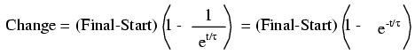
Sin embargo, queremos resolver por tiempo, no por la cantidad de cambio. Para hacer esto, manipulamos algebraicamente la fórmula para que el tiempo esté solo en un lado del signo igual y todo el resto en el otro lado:
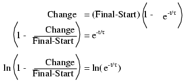
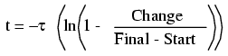
The lnLa designación justo a la derecha del término constante de tiempo es lalogaritmo naturalfunción: exactamente lo contrario de tomar el poder dee. De hecho, las dos funciones (potencias de e y logaritmos naturales) se pueden relacionar así:
si ex= a, entonces ln a = x.
si ex= a, entonces el logaritmo natural de a te dará x: la potencia queedebe ser elevado para poder producira.
Veamos cómo funciona todo esto en un circuito de ejemplo real. Tomando el mismo circuito de resistencia-condensador del principio del capítulo, podemos trabajar "hacia atrás" a partir de valores de voltaje previamente determinados para encontrar cuánto tiempo tomó llegar allí.
La constante de tiempo sigue siendo la misma: 1 segundo (10 kΩ por 100 µF), y los valores inicial/final también permanecen sin cambios (EC= 0 voltios arranque y 15 voltios final). Según nuestro cuadro al principio del capítulo, el condensador se cargaría a 12,970 voltios al cabo de 2 segundos. Conectemos 12,970 voltios como "cambio" para nuestra nueva fórmula y veamos si llegamos a una respuesta de 2 segundos:
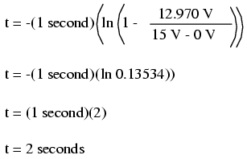
De hecho, terminamos con un valor de 2 segundos para el tiempo que lleva pasar de 0 a 12,970 voltios a través del capacitor. Esta variación de la fórmula de la constante de tiempo universal funcionará para todos los circuitos capacitivos e inductivos, tanto de "carga" como de "descarga", siempre que los valores adecuados de la constante de tiempo, Inicio, Final y Cambio se determinen adecuadamente de antemano. Recuerde, el paso más importante para resolver estos problemas es la configuración inicial. Después de eso, ¡solo es cuestión de presionar muchos botones en tu calculadora!
- REVISAR:
- Para determinar el tiempo que le toma a un circuito RC o L/R alcanzar un cierto valor de voltaje o corriente, tendrás que modificar la fórmula de la constante de tiempo universal para resolvertiempoen lugar decambiar.
-
- La función matemática para invertir un exponente de "e" es el logaritmo natural (ln), que se proporciona en cualquier calculadora científica.
Colaboradores
Los contribuyentes a este capítulo se enumeran en orden cronológico de sus contribuciones, desde el más reciente hasta el primero. Consulte el Apéndice 2 (Lista de colaboradores) para fechas e información de contacto.
Jason Stark(Junio de 2000): Formato de documentos HTML, que dio lugar a una segunda edición mucho más atractiva.
Lecciones en circuitos eléctricoscopyright (C) 2000-2023 Tony R. Kuphaldt, según los términos y condiciones delCC BY License.